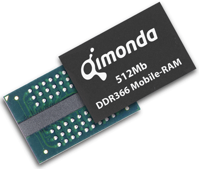

Structure
Random access memory (RAM) is part of the primary storage and initially empty. White (1998) said that needed data and tools for creating data (programs) are moved to RAM as a working environment. The work is all done here and products from this process are moved back to another storage sector to be stored, then RAM is erased.
RAM is etched with many parallel, thin and tiny address lines and data lines made of electrically conductive materials. Each addess line, at a right angle, is connected to a transistor that turns on or off a data line, which contains a capacitor that stores electricity, lying parallel to the address lines plane.
